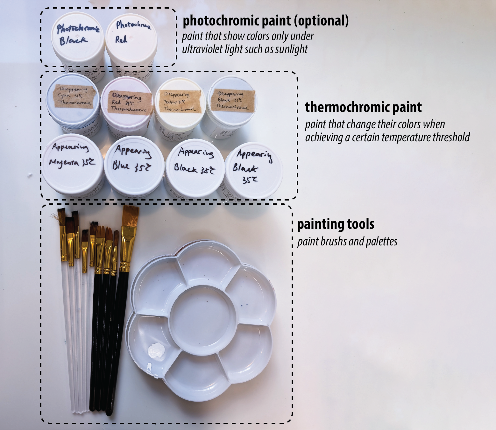
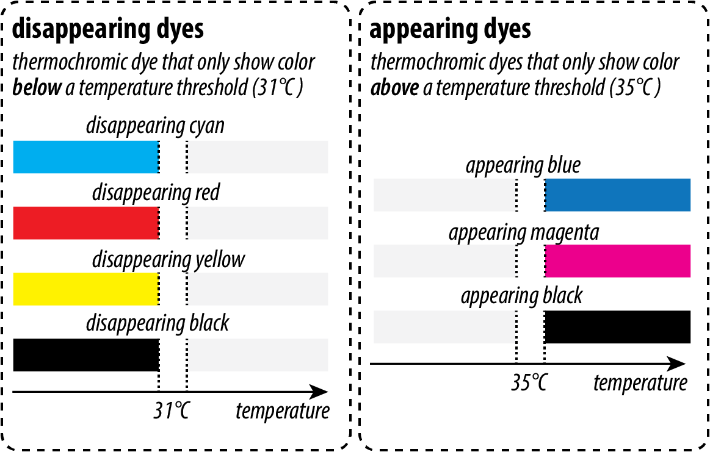
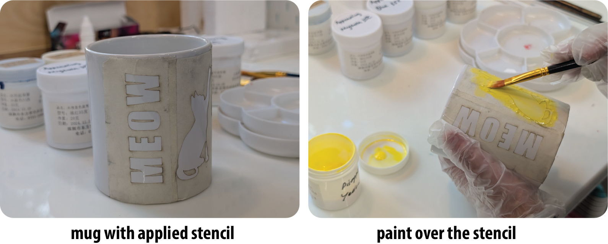
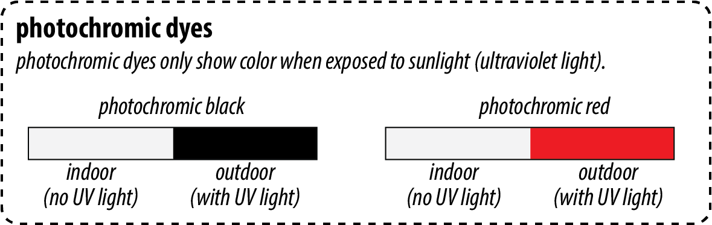

Lab 10: Thermochromic Mug!

🦺 Introduction
(1 minute read)Thermochromic paint is a type of paint that changes color at different temperatures. They can be used to paint mugs, or dye clothes.
In this lab, you'll create a thermochromic mug, which changes its pattern when you put hot water in it. During the process, you will learn how to:- ✅ Draw with acrylic-based thermochromic paint
- ✅ Design patterns that change at different temperatures
🎨 Tools for the Lab
The image below shows the tools available for this lab.
List of Items
- Thermochromic Paint: Used to create color-changing patterns on your mug.
- Painting Tools: The thermochromic paint provided in this lab behaves like traditional acrylic paint, so you can use a standard painting set.
- Photochromic Paint (Optional): This optional paint changes color under sunlight and can be used for additional effects.
- A Mug (not shown in the image): The surface on which you will paint your designs.
Step (0): Know Your Thermochromic Dye
In this lab, we provide two types of thermochromic dyes: appearing and disappearing.
Types of dyes on the picture
- Appearing: Used to create color-changing patterns on your mug.
- Disappearing: The thermochromic paint provided in this lab behaves like traditional acrylic paint, so you can use a standard painting set.
Step (1): Draw Your Patterns
Now that we are aware of how the paints will behave, lets start drawing your patterns
- Disappearing: Draw your disappearing patterns on the cold mug.
- Dry your paint, and heat up the mug: Dry your disappearing paint so that you can start painting the next layer.
- Appearing: Draw your appearing patterns on the hot mug
After the paint is dry, you will have your resulting thermochromic mug!

Optional: Use a laser-cut stencil
While you are welcome to draw your patterns freehanded, you can also use a laser-cut stencil to create more precise color blocks.


You can paint across the laser-cut stencils.

Optional: Photochromic Dye
One additional thing you can use is photochromic paint. Unlike thermochromic paint that changes color based on the temperature, photochromic paint changes its color when they are exposed to ultraviolet lights such as sunlight.
Here's a small block with patterns that only show under the sun. If you'd like to add an additional touch to your mug design, you can use photochromic paint that we provide.

More on color-changing materials
While you are welcome to draw your patterns freehanded, you can also use a laser-cut stencil to create more precise color blocks.